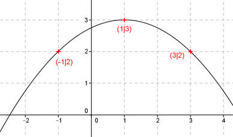

Aufgabe 10 Der Graph einer ganzrationalen Funktion 2. Grades geht durch die Punkte (-1|2), (1|3) und (3|2). Wie lautet seine Funktionsgleichung?  Allgemeine Form einer ganzrationalen Funktion 2. Grades: f(x) = ax² + bx + c f’(x) = 2ax + b f’’(x) = 2a 3 Bedingungen: 1. Geht durch den Punkt (-1|2) bedeutet: f(-1) = 2 --> a * (-1)² + b * (-1) + c = 2 --> a - b + c = 2 I 2. Geht durch den Punkt (1|3) bedeutet: f(1) = 3 --> a * 1² + b * 1 + c = 3 --> a + b + c = 3 II 3. Geht durch den Punkt (3|2) bedeutet: f(3) = 2 --> a * 3² + b * 3 + c = 2 --> 9a + 3b + c = 2 III I + II a - b + c = 2 a + b + c = 3 --------------- 2a + 2c = 5 IV I * 3 + III 3a - 3b + 3c = 6 9a + 3b + c = 2 ------------------ 12a + 4c = 8 V IV * (-2) + V -4a - 4c = -10 12a + 4b = 8 ---------------- 8a = -2 |:8 2 1 a = - --- = - --- = -0,25 8 4 a = -0,25 in IV eingesetzt: 2 * (- 0,25) + 2c = 5 -0,5 + 2c = 5 |+0,5 2c = 5,5 |:2 c = 2,75 a = -0,25 und c = 2,75 in II eingesetzt: -0,25 + b + 2,75 = 3 b + 2,5 = 3 |-2,5 b = 0,5 Gesuchte Funktionsgleichung: f(x) = -0,25x2 + 0,5x + 2,75